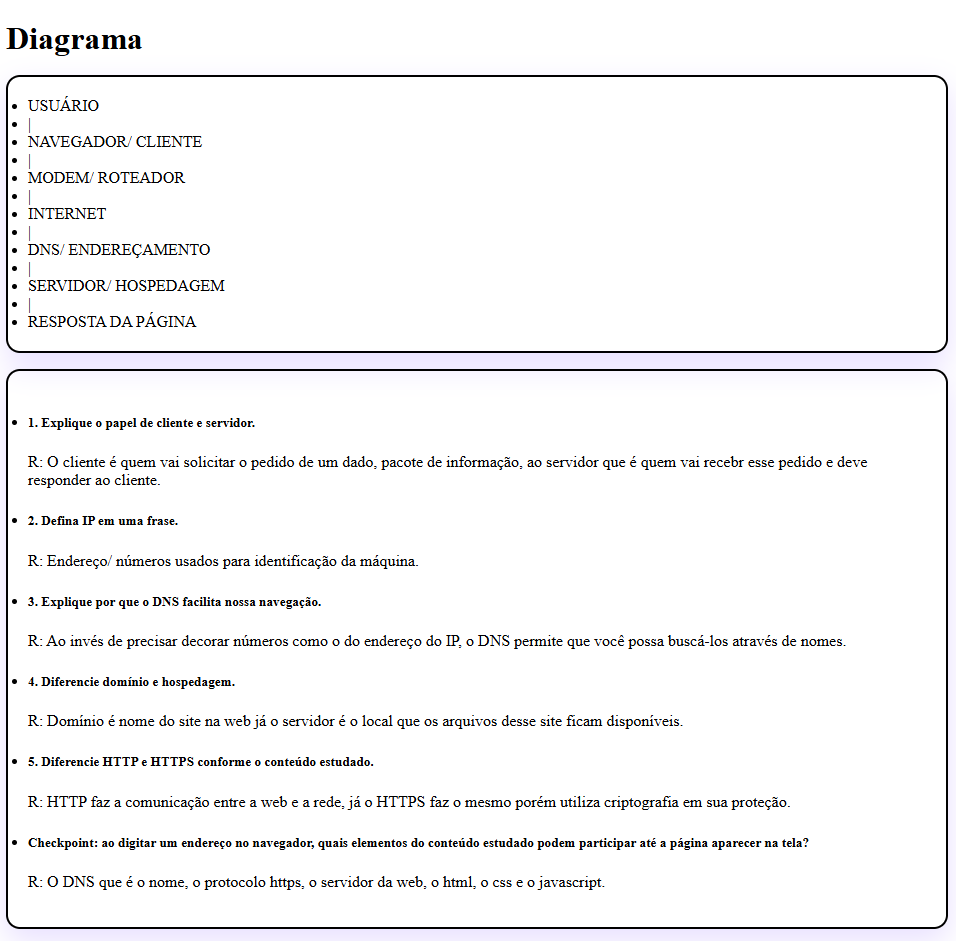

Esta página contém links para as aulas 0 a 4 do curso de Recuperação Web.
1. Identifique no computador utilizado: processador, quantidade de RAM e tipo/capacidade de armazenamento.
R: Processador: Intel(R) Core(TM) i5-14500 (2.60 GHz)
RAM: 16,0 GB (utilizável: 15,7 GB)
Tipo/capacidade: Sistema operacional de 64 bits, processador baseado em x64, 954GB.
2. Anote qual sistema operacional está instalado.
R: Windows
3. Liste dois navegadores disponíveis.
R: Chrome e Edge.
Checkpoint: explique a diferença entre hardware e software e cite dois exemplos de cada um relacionados à aula.
Hardware é o nome dado a todos os componentes físicos da máquina como por exemplo o monitor, o processador e a placa mãe.
Software é o nome dado a todos os programas que são utilizados pelo usuário através dos hardwares. Exemplos de software são o sistema operacional Windows e seu navegador Edge.
ARPANET: Primeira rede de comunicação criada no mundo que funcionou antes da criação da Internet.
1969: Criação da Arpanet com quatro pontos de comunicação em universidades dos EUA.
década de 1970: Utilização de mais pontos de comunicação e o início do protocolo NCP.
NCP: Protocolo utilizado durante a era da ARPANET para gerenciar a comunicação e transferir arquivos.
TCP/IP: Vários protocolos de comunicação que trabalham para definir a criação dos dados, como serão transportados, o endereço e como serão recebidos.
1983: Surge o TCP/IP protocolos que estavam presentes enquanto a ARPANET evoluía.
WWW/HTML/HTTP: WWW é a rede de computadores onde podem ser acessadas as páginas e os recursos proporcionados pelos navegadores, HTTP faz a comunicação do seu computador com a rede e o HTML que é a linguagem de marcação é o que estrutura as páginas da web.
RNP: Rede Nacional de Ensino e Pesquisa, é um sistema brasileiro criado para a comunicação entre universidades e institutos de pesquisa, um local digital que alunos, professores e pesquisadores utilizam para compartilhar conhecimento.
1995: Foi o ano da criação da Web. WWW, HTML e HTTP foram criados pelo Tim Berners-Lee.
Internet e Web são a mesma coisa? Por quê?
R: Não, a internet é apenas a rede que conecta os computadores do mundo inteiro possibilitando que haja comunicação entre eles. Web é um sistema que utiliza a internet para o acesso de páginas e recursos dentro de navegadores.
Checkpoint: explique com um exemplo simples por que a comunicação por pacotes é importante para entender o funcionamento da Internet.
R: O sistema de comunicação funciona quebrando as informações em pedaços justamente para garantir que ninguém consiga travar a comunicação e a rede continue funcionando para todos os computadores.
Por exemplo, se não houvesse essa quebra de informações o sistema ficaria congestionado e ninguém conseguiria enviar informações ao mesmo tempo, não seria possível os pacotes de informações serem enviados por caminhos diferentes caso algum caminho esteja congestionado, e também seria mais difícil recuperar uma informação inteira que se perdeu do que apenas um pedaço dela.
